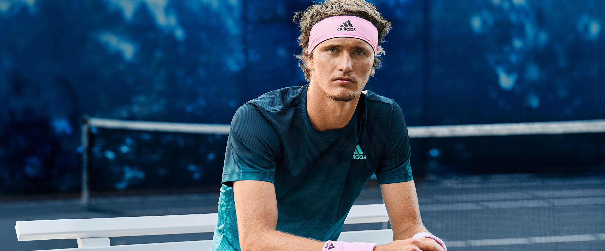

A young player who stole the show in the world of tennis

Alexander
Who is Alexander Zverev?
Alexander "Sascha" Zverev is a German professional tennis player. He has been ranked as high as No. 3 in the
world by the Association of Tennis Professionals (ATP), and has been a permanent fixture in the top 10 since
July 2017.
Sascha's reaction after Australian Open
Alexander Zverev says the time has come for him to start winning titles rather than being the entertaining
loser.
Zverev reached his first Grand Slam final last year at the US Open although he was unable to convert it to a title,
losing in an agonising final set tiebreaker to Dominic Thiem.
He started this season reasonably enough, leading Germany to the ATP Cup semi-finals before losing to
Novak Djokovic in the quarter-finals of the Australian Open.